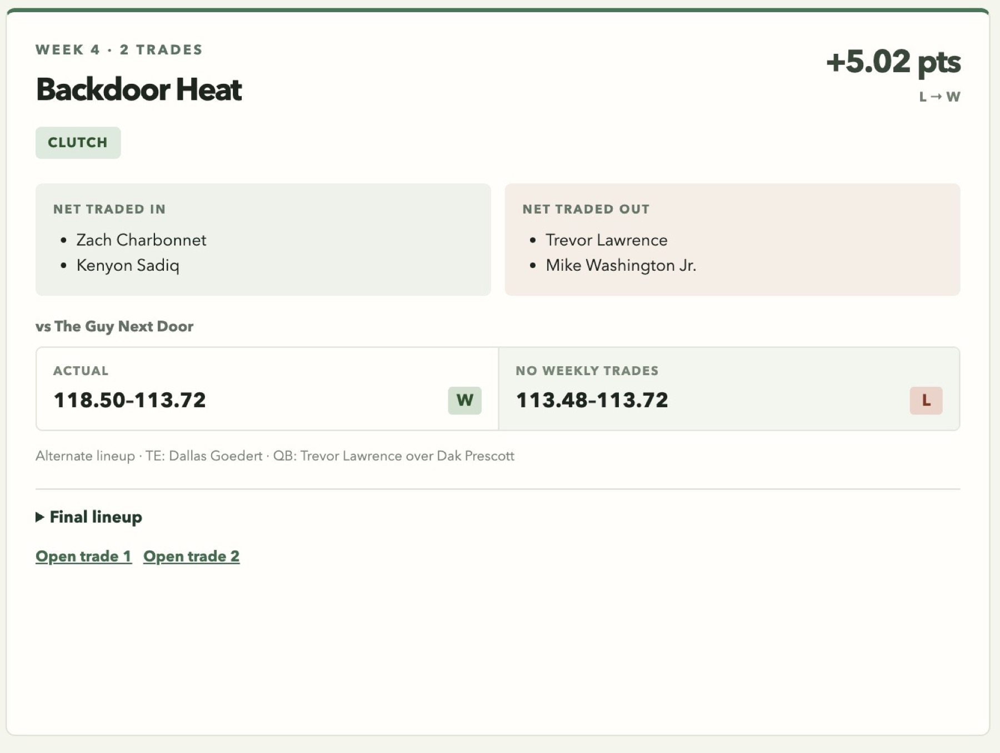
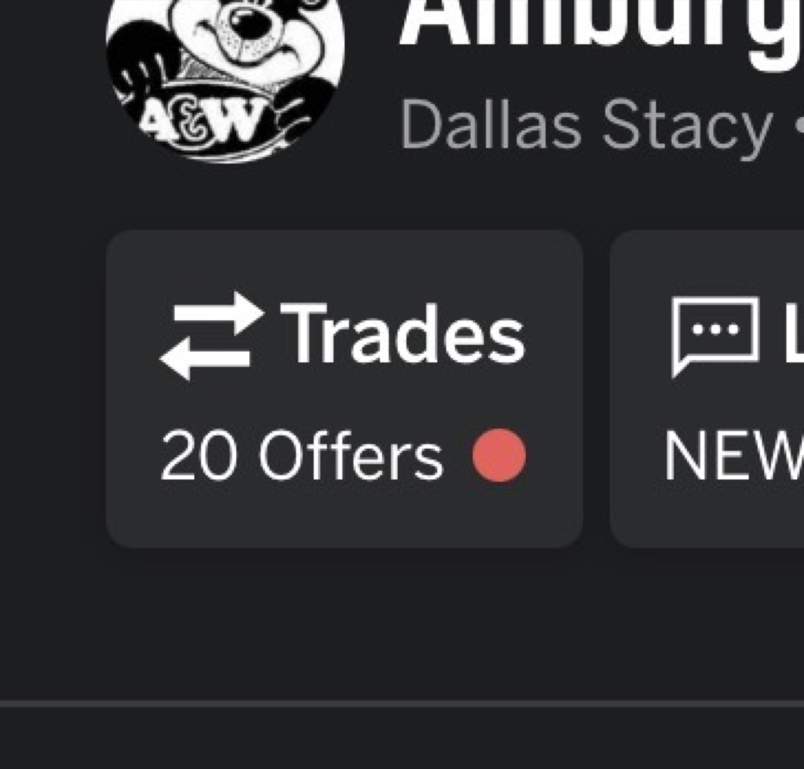
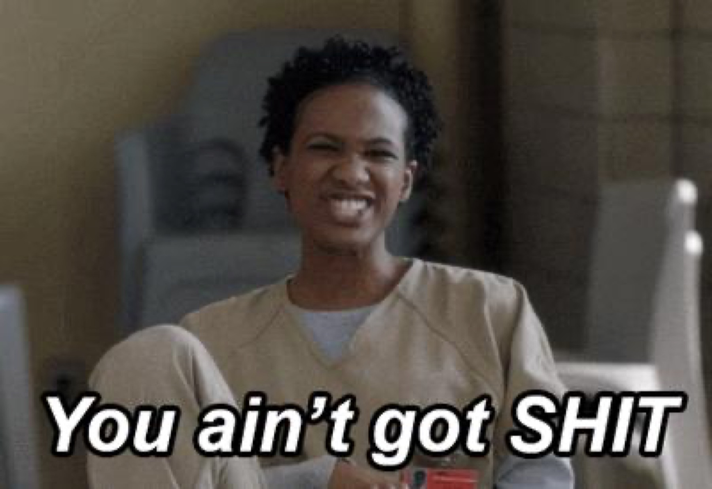
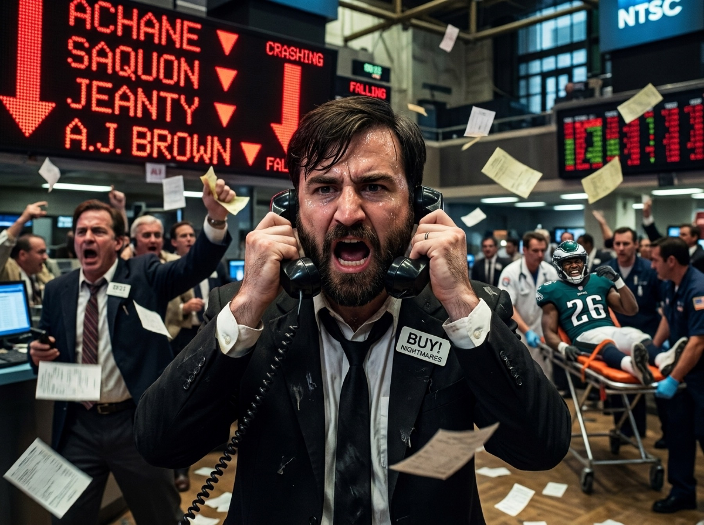

Tuesday Service · H-Town Holy Rollers · A Sermon in Five Parts
THE PREPARATION H MESSIAH.
Jackin’ Goff asked why the champion had a new name. H Town answered with the origin of relegation, from the pulpit.
0-4The Relegated Ramsay. A league first, and a name.
DownstairsOtter by 0.76. Mac started a man ruled out Friday.
The HabitThe Nightmares can stop whenever they want.
KnockoutThe commissioner, chopped there too.
“It was terrible. It was perfect.” · H-Town Holy Rollers, on relegationWeek 4 · 2026
From the DeskWeek 4 · October 7, 2026
Editor’s Letter
Dear Pastor
A note to the pulpit from the back pew.
Dear H Town, thank you for Tuesday’s service. Jackin’ Goff asked one polite question about the name changes, and you answered with Genesis, in five parts, starring the Shiny Hineys as a villain called the Twinkly Tookus.
Most of the gospel holds up. Doubts are in the margins.
The weekend before, the commissioner went 0-4, a first for a defending champion, and by Tuesday morning he was already wearing the name you were about to explain.
Not all heroes wear capes. He checked his junk (yep, still there) and flicked the first domino.
H-Town Holy Rollers · Part 2 · on himself
Yours from the back pew, the Straw Closed Wednesday, Oct. 7 · Central time
Contents
The Preparation H MessiahThe sermon, annotated, and the Tookus responds03
Relegated Ramsay, by RequestThe champion, 0-406
I Love Fantasy Football AgainBoom wins two names07
Elsewhere in the DiscordFlags, glass, kickers08
DownstairsOtter, Mac, Amburgers09
Live by the TradeThe Nightmares’ trade luck10
The KnockoutExhibit B. Eight remain.11
On the AirwavesS05 EP05 · Boom12
The DeskEleven trades, three leagues13–14
ScoreboardsPremier, Champeens, Point After15–16
The Week in Numbers
6 of 7
Premier trades with Boom on them
35
Hours Garrett Wilson spent away from Boom
0.0
Jeanty as a Nightmare, bought twice
0.18
Guy Next Door’s perfect lineup, still short
1
Posts by Mac Attack, ever
Overheard
“Officer, I didn’t know I was speeding, I was distracted by how terrible my players are doing”
Cowboys September Nightmares · Sunday
By that I mean I cried myself to sleep
Jackin’ Goff · on his 0-4 start · Monday
Man I may have pooped on my toe once. Glad I didn’t get Mixon foot
Amburgers · on the Mixon rumors · Wednesday
Lana Straw Weekly · The StrawW4 · 02
Cover StoryThe Origin of Relegation · Parts 1 and 2
Tuesday, Oct. 6 · From the Pulpit
The Preparation H Messiah
Jackin’ Goff wanted background on the name changes. H Town gave him Genesis, in five parts and 47 minutes. Reprinted unedited, typos and all. The margins have questions.
Part 1
The Origin of Relegation
Let me tell you a story, my boy.
In Year 8 of the esteemed Lana Straw, before our little Peens League was even a twinkle in anyone's eye, a little shit named [Shiny Hineys] decided his season was over. In Week 5.1 (I think. The trauma has blurred the details.)
Then he made the proclamation that would change Lana Straw forever: "Ok boys, I'm done. Season's over. I'm prepping for next year. Derrick Henry is on the block for draft dollars."2 Or some such drivel.
He shipped Henry off for some Dawson Knox-like,waiver-wire retread3 and the maximum allowable keeper dollars. The league, as was only logical, went apeshit. On him. On the guy who took the deal ([the Over/Under Achiever$] , I believe)4. But mostly on the Twinkly Tookus, as our shiny villain will be known henceforth.
Nobody had ever imagined a manager actively trying to lose, let alone in Week 5. The integrity of the league! The fun! Every remaining opponent would know the Tookus was lying down each week. Some of us had already played him... and lost.5 Oh, the humanity !(Names withheld to protect the victims.)
This egregious act of treachery got us all mad. But it also got some of us thinking. Our last-place punishment clearly wasn't enough. Something had to be done.
Enter our hero. A modest man. A Lana elder statesman. Appalled like everyone at what had come of his precious league, and he had half a mind to do something about that little shit, Tookus. About that same time with time he had when he wasn't scouring other rosters for trade ideas, and bandying back terrible offers from [Boom Baum] ( some things never change), he'd been watching early-season Ted Lasso, and a wild question took hold: "What if we could kick a tanker out of the league?" (1/?)
Part 2
Then, like a Preparation H Messiah, he conceived the idea that would change the destiny of Lana Straw forever. It's the reason you are here today, my little Peen Champion:
A thought so horrific it would crush tanking forever. So unthinkable that every manager would keep his roster updated all season long. The fear that one day you might no longer call yourself a Premier League member. It was terrible. It was perfect.
RELEGATION.
(Shiver)
But could he actually propose it? Last place banished to the underworld of an upstart AAA league, left to toil among the wannabes until he proved himself worthy again?
Cometh the moment, cometh the man. Not all heroes wear capes. He checked his junk (yep, still there) and flicked the first domino.
And who was this Moses who would lead Lana Straw to the Promised Land and birth an entire new league in the process?
That's right. You guessed it.
The H-Town Holy Rollers.6
(2/?)
Notes from the trade log
1Week 9, by the trade log: Oct. 31, 2023. The trauma is understandable.
2Henry had arrived in Week 4 from the same Over/Under, for CeeDee Lamb and Jordan Addison. He went back five weeks later.
3Curtis Samuel. He scored 0.0 on the Hineys’ bench and was on another roster within a week.
4The Over/Under Achiever$. He believes correctly.
5One of us, anyway. See page 5.
6Champion in 2016, 2018 and 2020.
Draft weekend. What the plan became.
Cover Story · The Origin of RelegationW4 · 03
Cover StoryThe Origin of Relegation · Parts 3, 4 and the Epilogue
Scripture, Continued
Dear Reader, We Were Not Right
Part 3
But here, the story takes a dark turn. In many ways it has a happy ending, but there were costs.
The first league mate our Righteous Savior of Lana would pitch was: his younger brother, the Great Oz behind the curtain of Lana Straw, the Commissioner himself, Fart Toot Squeek.
Equally indignant at the Tookus' shenanigans, the Commish wasted no time expressing his feelings. After hearing the pitch and only a few clarifying questions, he said "I love it. How do we do it?"
So we took the bare bones of the concept and fleshed it out. Not one, but two losers would be sent down to a fresh league of managers. An 8 team became 12. A toilet bowl tourney in the last 3 weeks of the season. Ball don't lie. Lowest total points goes down This would instill the necessary fear in the middling, the miserable, and the mischevious; trim the fat, and bring some hungry new blood into the league. Plus, we'd get a whole new crop of 12 fresh-faced hopefuls to corrupt into fantasy degenerates and Draft Weekend hellions.
What could possibly go wrong?
Not everyone was on board. There was a lot of internal debate, and the main sticking point was obvious: how horrifying it would be to have a season go so badly that you got relegated. A curse worse than death, naturally.
But then we reasoned it through. If you did the right things: drafted smartly, worked the waiver wire, made a few roster-improving trades, (mostly with Boom Baum)7, you'd never get relegated. Right? There's justice in this world. Right?
Well, dear reader, we were not right. We had no idea how wrong we could be. And one of us was about to pay dearly for that miscalculation. (3/?)
Part 4
Nothing went as expected the next year.
The Commish did a great job recruiting, everyone bought in, and the new blood paid dividends almost immediately.
It bears saying: the Commish loves this league. It's his home away from home. He lives and dies with his team, sure, but he genuinely loves the personalities, the friendships, the shit-talking and the ribbing. Inside Lana Straw, he is fully in his element.
But fantasy football isn't easy, and when it's hard, it's almost unbearable. The performance of Fart Toot's soldiers on the field did not match the passion in the owner's box.
Like a cocky Razorback who swoops in, buys a legendary franchise, enjoys some early glory, and then watches the thing he loves turn to ash in his hands (not despite his decisions, but because of them), the Fart Toot missed the playoffs and found himself fighting for his very existence.
He was not alone in the toilet bowl. Beside him stood his two brothers: the aforementioned Lana Straw Legend and Peen League Progenitor, H-Town, and the youngest Ramsay bro, a past champion and current front-runner, Willie Nillies. But this story is not about them. They got out alive.8
Now, the Fart Toot has always loved a running quarterback, so he had ridden the coattails of the tush-pushing, running-for-his-life, is-he-good-or-isn't-he Jalen Hurts.
What an apropos name. In Week 1 of the toilet bowl, Hurts got hurt. And though it would take three more weeks for the Fart Toot to finish circling the bowl, he would not merely be hurt. He would be crushed.
Mighty Casey had struck out.
And so he became, for all of history, the first Relegated Ramsay.9
The End. (4/5)
Epilogue
Epilogue- Though he went down with a flush, you can't keep a good man down and there is justice in this league, because through some technicality that it still isn't absolutely clear.10 [Fart Toot Squeek] returned the next year skipping the Peens league punishment through a breathtaking performance in the draft weekend and he would win it all.11 But that little Peensters is a story for another day.
Signed, The Architect of Relegation yet never relegated himself12 ([H-Town Holy Rollers] )
Notes, continued
7Still true. Boom was on six of the seven Premier trades since last Wednesday night. See page 13.
82024 Toilet Bowl: Willie Nillies 460.6, H Town 439.0. The commissioner, 316.3, went down.
9Also his actual name since Tuesday morning, five hours before this was posted.
10The 2025 play-in.
11The 2025 title. He is 0-4 in 2026.
12True. In 2024 H Town also started 0-4, and survived the Toilet Bowl by 122.7 points over his brother.
Ball don’t lie.
Part 3 · on the rules of relegation, as drafted
“He would win it all.” He did. The belt is now 0-4.
Cover Story · The Origin of RelegationW4 · 04
Cover Story, ContinuedShiny Hineys · 2023
The Rebuttal
The Name’s Tan King
The sermon’s villain, the Shiny Hineys, was in the pews and objected within two minutes. Their 2023 season has a twist the preacher left out.
The Twinkly Tookus, still applying maximum effort to the wrong things.
Part 1 was barely up when the Hineys filed a correction from the second row: “*week 6 I was 0-6. Almost made playoffs with Warren and Tank Dell”. The preacher promised “Details and Oh, we will get there Twinkly Tookus”. The Hineys went with a new name instead, which is the fashion this week.
The name’s Tan King to you
Shiny Hineys · Tuesday
Then theology: “I seem to remember two other managers following the strategy and they both placed lower than me”.
A correction to the correction: the Hineys were 0-5, and they won Week 6, 108.50 to 98.12, over a club called Sybil’s Daddy. Sybil’s Daddy was H Town. “Names withheld to protect the victims,” the sermon says. Fair enough.
The Tookus Tapes · Shiny Hineys, 2023
Result
1–5
Five straight losses
0-5
6
Beat Sybil’s Daddy (H Town), 108.50–98.12
1-5
7–8
Two more losses, by 22.5 and 55.56
1-7
Oct 31
Derrick Henry to the Over/Under Achiever$ for Curtis Samuel
trade
9–13
Five straight wins
6-7
14
Lost to Amburgers, 139.64–76.94
6-8
Final
Tenth of twelve. “Almost made playoffs.”
10th
Two Witnesses
Six days before the sermon, the pod told this story. Amburgers: “Remember one year he was decided I’m just gonna tank and he couldn’t, he couldn’t even.” Boom:
“He traded away everybody that year and just quit and then he won like five straight.”
The commissioner, at 0-3: “didn’t we have a lot of conversation about how the secret to fantasy football is you just have to surrender.” He has not surrendered.
Between Parts 3 and 4 the Cowboys September Nightmares heckled from the choir loft.
The Hineys and the bot, still working through some things.
“This is a really long way to say ‘and now the Peen league is actually the better league’”
Cowboys September Nightmares · Tuesday · H Town answered with Baby Yoda
Cover Story · The Tookus RespondsW4 · 05
The Commissioner’s OfficeThe Relegated Ramsay · 0-4
The Reigning Champion, Renamed
Relegated Ramsay, by Request
No defending champion had ever started 0-4. He did it with the best quarterback score in the Premier on his bench, then changed his name when asked nicely.

The Lawrence trade, from the other end.
The pod saw it coming. H Town picked the Tornado to go 4-0, “and Scott’s team would go to oh and four.” Everyone on the pod, Amburgers included, then agreed they would rather be the champion at 0-3 than Amburgers at 3-0. It is under review.
Sunday the champion started Trevor Lawrence, acquired for a tight end he had owned for five hours. Lawrence scored 14.08. Drake Maye, on the bench, scored 28.66. Mike Evans sat next to him with 10.10. Either one wins a game he lost by 6.72.
Lawrence was also his horse in a name bet made live on the pod. Boom took Bryce Young, who scored 23.46 on Boom’s bench and won anyway.
Boom, Monday morning, with real feeling: “Damn. [the commissioner] that sucks. Drake Maye continues to spite you.” Tuesday morning he settled the terms: “please change your name to ‘The Relegated Ramsay’”.
The name changed within the hour. The commissioner follows the rules faster than he sets lineups. His knockout club, shared with the Nightmares, was chopped the same weekend (page 11).
The Case for Calm
458.3 points, fourth in the Premier. His 128.98 was the week’s fourth-best score.
He holds the wild card, from eleventh, again.
In 2022 the defending champion started 1-3 and finished 9-5. That was also him.
The Case for Concern
557.0 against, the most in the Premier by 79.4.
No 0-4 start has won a title. Next: All Gold, No Glory, 3-1.
The Over/Under Achiever$ 1-3 · Amburgers 2-2 · Amburgers 2-2
–
2026
The Relegated Ramsay
0-4
The Commissioner’s OfficeW4 · 06
The Trade FloorBoom Baum · I ❤️ The Seahawks
Boom Baum · 2-2
I Love Fantasy Football Again
Boom won two name bets in one weekend with the Premier’s high score, then traded away his top scorer two days later.
The second bet started Thursday morning, when Diamond Dogs noticed that the club then called the Scott Ramsays had no healthy quarterback. Boom had been courting him: “I sent him four trades with Lamar Jackson. The dude is disengaged”. Then: “check my 13 trade requests”. The reply became a contract.
I’m gonna beat you with Marcus Mariota
The Scott Ramsays, now I ❤️ The Seahawks · Thursday
Juwan Johnson got 8.9. “61 from Big Johnson,” Boom had predicted, generously.
Mariota’s game was in London, which meant kickoff at breakfast. His manager registered a complaint with the republic: “This is America. Why is football on before 12pm?” Mariota then left with a knee injury and 5.34. The club had also started Keenan Allen, ruled out on Saturday, for 0.0. Boom 136.88, the future Seahawks 85.74, the biggest margin of the week.
Boom, Sunday night: “What a difference two weeks can make. Two NCT wins, a Boom domination, and a Seahawks win. I love fantasy football again!” The penalty was I ❤️ The Seahawks, for a Cowboys fan. The loser held out until Tuesday afternoon, with one last confession: “I wanna twist their seacocks so bad”.
Meanwhile, the Store Was Open
Operators are standing by. Three of them are hurt.
Friday Boom posted a public service announcement in the trade channel: “I now have the depth and girth you need. I am offering two and three starter deals. Buy one get three!!!”
Monday he sent H Town, who had not made a trade all year, Breece Hall, Garrett Wilson and Javonte Williams for Jonathan Taylor, Terry McLaurin and DJ Moore. Three of the six were hurt. The commissioner: “The mixture of injured players on this one makes it hard to vote either way”. Boom: “They call me “Big Nuts McGee””.
Tuesday night he sent H Town Tetairoa McMillan, who had scored 39.20 for him on Sunday, to get back Garrett Wilson, who had scored 4.2 and whom he had traded to H Town 35 hours earlier. Wednesday the Hineys filed a scouting report: “Boom Baum trying to trade his way around bye weeks”. Boom confirmed: “Yup and with Coker coming back I am using my classic big brain. 🧠”
“I will be kind to you, a trade virgin.”
Boom Baum, to All Gold, No Glory, builder of the Trade Time Machine, who has made zero trades
The Trade Floor · Boom BaumW4 · 07
Elsewhere in the DiscordOct. 1–7
Short Stories
Flags, Glass and a Slide Deck
The Guy Next Door · 1-3
The White Flag
The Champeens’ welcome committee.
Sunday night, staring at 1-3, he skipped ahead to next August: “Yall better watch out at draft weekend next year. I’m going to be a force on Friday night fighting for my spot back into the premier league. My prep begins tonight”.
He lost to Backdoor Heat by 4.78. His perfect lineup would have lost by 0.18. Prep has begun.
Jackin’ Goff · 0-4
Mr Glass
Goff spent Sunday evening rooting against a building: “Only thing that will keep me alive is the hope the Caesar’s Superdome burning to the ground and the game being cancelled”. Then a backup plan: “I guess Olave and Bijon getting into a fight pregame and banned from the game would also help.” They played. Bijan scored 30.20 for his opponent, the Kickers n Jigba.
Monday he floated selling “Mr Glass Ladd” for a kicker. That night he sold him, freshly week-to-week, to Backdoor Heat, and McConkey was upgraded to day-to-day before bedtime.
I’ve already come to terms with the 0-4 start
Jackin’ Goff · Monday · clarified a minute later, see page 2
Kickers
The Slide Deck
H Town has a long-running grievance with kickers. Monday he called Brandon Aubrey’s 8 points ridiculous, and the Nightmares defended Aubrey as “an angel with the leg of an ICBM”. Then Amburgers lost by 0.98 with his kicker at 1.5, and at dawn Texas Tornado’s Bush called for counsel: “Where is [H Town] to use this example against kickers?”
I’ve got a slide deck
H-Town Holy Rollers · Tuesday
The Tornado: “Go to play book response number 7”. H Town: “I love it when you talk dirty to me”.
Friday
Directory Assistance
Otter asked the league’s bot for every manager’s phone number. Boom: “And social security numbers?” The Nightmares posted theirs with a jab at Boom’s trade volume, and Boom answered as a receptionist.
Bold move posting your number publicly. Anyway, Dr. Roman says your ED consultation is confirmed for Tuesday.
Boom Baum
My wife’s boyfriend will be so upset I’m finally getting that addressed
The Nightmares
Around the League · The Quiet Car
The Kickers n Jigba lead the Premier in points by 72.6 and posted three times all week. Texas Tornado’s Bush beat the champion to go 4-0. All Gold, No Glory lost for the first time, 135.32 to 107.28. Nobody mentioned it. Diamond Dogs lost by 10.84 with Brock Purdy’s 21.62 on the bench. Backdoor Heat won with two zeroes and filed one complaint: “Freakin 0.9 points for my TE’s in 4 weeks!”
Downstairs, OKC Schlegstas won by 0.98 and The Jackal by 19.06, and neither said a word. Neither did Neaux Gold, All Glory, at 0-4. Prime Lime Time benched C.J. Stroud’s 25.08, lost, dropped him Wednesday and reported that “mac Attack won’t answer my calls.”
Elsewhere in the DiscordW4 · 08
DownstairsThe Champeens · Week 4
The Champeens
Point Seven Six
Otter is the last unbeaten club downstairs because Mac Attack started a receiver who was ruled out Friday. Amburgers held a garage sale and lost by less than a point.
On the pod H Town picked Mac Attack to stay unbeaten “until he accepts a trade”. It has not accepted a trade, or read an injury report. DeVonta Smith was ruled out Friday and started Sunday anyway, for 0.00, with Mike Evans’ 10.10 on the bench. Otter 118.88, Mac Attack 118.12. The Nightmares noticed: “Interesting strategy by Mac to play Devonta after he has been ruled out for days 👀👀👀”. Jerry had a precedent ready.
Very Ethan’s Excellent Team of him.
Jerry GM + Jerry Owner · Sunday night
Otter is 4-0, first in points, and shopping for a receiver. Mac Attack has posted once in its life, in August 2025, and is not expected to comment.
Amburgers · 3-1
The Garage Sale
Amburgers put Ja’Marr Chase on the block Thursday, heard nothing, and went over the league’s head.
Lord…deliver me from this place where I’m offering up one of the best WR’s in the bleeping NFL and I get crickets from the rest of this forsaken Fantasy Football League. … Amen
Amburgers · Thursday
By lunch he had dropped the church voice: “Okay you dingleberrys I’ll send out offers, I know it’s the peen league and figuring out how to send trades is tricky.” The Nightmares offered Tony Pollard and the Houston defense. Jerry, told he sent one offer: “Yeah but I sent it several times.”
Sunday Chase left with a concussion and 4.2 points. Monday, with Chase still in the protocol, Amburgers sold him to Southern Culture On The Skids, then still Madison Beer, for Javonte Williams and $15 of FAAB. Monday night Amburgers lost to OKC by 0.98.

Thursday afternoon. Amen.

The Nightmares’ appraisal.
“Freaking Boswell missing a fg cost me”
Amburgers · Tuesday morning · Wednesday he cut Boswell for a $1 kicker
Downstairs · The ChampeensW4 · 09
DownstairsCowboys September Nightmares · 1-3
The Champeens · A Season in Trades
Live by the Trade
Four trades since the draft. The eight players they got have scored 100.02 points in their lineup. The seven they gave away have scored 241.92 in other people’s.

Sunday, first quarter. Buy.
It began on Sept. 1, back when the club was still the Dreams. Javonte Williams, Ashton Jeanty and Jaylen Waddle went to the club now called Southern Culture On The Skids, for De’Von Achane, A.J. Brown and Tetairoa McMillan. They wrote their own trade alert before the bot could: “Who Won the trade? America”.
Brown played one game and went to injured reserve. Achane lasted 26 days, then tore his ACL. The next afternoon the listing went up: “2026 Achane. Make me an offer. no lowballs. I know what I’ve got.” His trade partner apologized and got the house philosophy back.
Live by the trade, die by the trade, baby!
Cowboys September Dreams, becoming Nightmares · Sept. 28
In between, the Dreams sold Amburgers an empty tight end slot for $10 of FAAB, called it “another example of the innovations in fantasy football we can accomplish when we think with our Peen league,” and lost to Amburgers by 9.56.
Thursday they sent McMillan and Josh Allen to Jerry to buy Jeanty back. Twenty-nine hours later they sold him again, for 0.0 points of service, for Saquon Barkley, Tee Higgins and Josh Downs. That night: “Knowing my luck, trading for bijan would lead to him immediately breaking ever bone in his body in a non-football injury”.
Sunday, first quarter, Saquon’s hamstring went: “bahahaha im literally losing a traded for RB in the open quarter two weeks in a row”. McMillan scored 39.2 for Jerry, more than in his three weeks as a Cowboy combined, and the Jackal won by 19.06.
The Ledger, 2026
In
8 players acquired, points in the Nightmares’ lineup
100.02
Out
7 players sent away, points in other lineups
241.92
Wk 4
The Jerry trade: sent 58.22, got 23.72
−34.50
The Intervention · Sunday night
Jerry: “Steven is addicted to the trade”. “He would trade his family if they were active players”.
The Nightmares: “I’m not addicted, I can stop whenever I want.” Then: “my only successful trade this season was trading my son 5 extra minutes of playing with monster trucks and in return he took his sleep gummy”.
“I promise even if it looks one sided, I’m gonna end up getting a guy that will get injured anyways”
Cowboys September Nightmares · Monday, shopping again
Downstairs · Live by the TradeW4 · 10
The KnockoutLana Straw Knockout · Week 4
Last Place Leaves
Exhibit B
Cowboys September Farts, the knockout club the commissioner shares with the Nightmares, led the knockout in Week 1 and was chopped in Week 4 with Jaylen Waddle on the bench. Eight remain.
Exhibit A.
The Farts opened the season with 122.00, the best score in the knockout. Then 65.20, which survived by 3.18. Then 86.84, which survived again. Sunday they scored 83.50, last of nine and 6.72 behind Prime Time’s Next Door. Rashee Rice left his game with a hamstring and a zero in the flex while Jaylen Waddle’s 12.00 sat on the bench. Waddle for Rice is 95.50. They would be alive.
The Nightmares filed the paperwork Monday night: “As exhibit B, here’s the current status of Scott and my chop league roster from week 1 🫠”. That Week 1 lineup now has three players on injured reserve.
Jeremiyah Love has now been chopped twice in two weeks. He was on Boomer Frogs, H Town’s club with OKC, chopped in Week 3. The Farts paid $402 for him on Sept. 30, over Backdoor Warriors at $347. He scored 6.0. Wednesday Prime Time’s Next Door paid $185 to see about a third time.
The waiver run that followed was the Farts’ estate sale. Christian McCaffrey had scored 14.50 for them. Glory Burgers, Amburgers’ club with All Gold, paid $447 for him, over bids of $400, $388, $350 and $215. Amburgers answered with a “Ladies and gentlemen, we got him” GIF. The Nightmares had already proposed a remedy on Sunday night: “I think a fitting punishment would be to give me CMC so he can get injured starting for me next week 🤣”.
At the top, Yes Diamonds, Jerry’s club with Diamond Dogs, scored 144.84, the best week of the season, with Nico Collins at 28.30, Chuba Hubbard 26.40 and Jonathan Taylor 22.20. Its first three weeks were 106.14, 90.14 and 107.50. Glory Burgers lead the survivors in total points with 504.46. Prime Time’s Next Door survived at 90.22 with Saquon Barkley at 1.5 and Travis Kelce at 2.5, which is the knockout’s idea of a good day.
Exhibit B.
Week 4, nine clubs
Pts
1
Yes Diamonds
144.84
2
We’re Having Fun No
123.42
3
Glory Burgers
123.22
4
Backdoor Warriors
116.88
5
Michael’s Magnificent Hiney
111.98
Pts
6
JackaWhack
109.50
7
Robert’s Rowdy Team
100.32
8
Prime Time’s Next Door
90.22
9
Cowboys September Farts · chopped
83.50
The chopped, in order · Fart Toot Sneak (Week 1, 86.90) · The Otter is Jackin Goff (Week 2, 62.02) · Boomer Frogs (Week 3, 75.46) · Cowboys September Farts (Week 4, 83.50). Knockout deal · Saturday, Backdoor Warriors received DJ Moore from Robert’s Rowdy Team for Jacory Croskey-Merritt. Moore hurt his shoulder Sunday. Rowdy dropped Croskey-Merritt Wednesday.
The KnockoutW4 · 11
On the AirwavesS05 EP05 · Flag Plants, Forgotten Trades, and Full Send FAAB · Oct. 1
The Guest · Boom Baum
Thirty-Seven Trades at the Same Time
Boom came on the pod at 1-2. Late in the show, a trade he forgot sending was accepted live.
Boom opened by thanking the man he traded De’Von Achane to, just before Achane tore his ACL: “getting off of [Achane] just at the right time oh my god um that was a miracle thank you Shiny Hineys I love you you’re my boy”. He was bullish on Jeremiyah Love, “I’ll probably trade him tomorrow but as of right now it’s great”, and traded him that night. A day early.
The commissioner introduced the flag plant, the player you go all in on. His was Kyren Williams, acquired for Dalvin Cook, a trade he ranks above “maybe both my championships or no all three of my championships uh maybe even combined.” The victim was in the studio. Boom: “it was like a dagger in my kidney every week”. The commissioner, at 0-3: “I’ve got three daggers in my kidneys this season”. Four, now.
He accepted a trade I forgot I sent, which is pretty typical.
Boom Baum · live, as Texas Tornado’s Bush accepted
The Tornado took Aaron Jones, Ollie Gordon, Trey McBride and Rachaad White and sent Boom Nico Collins, Cam Skattebo and Dalton Schultz. Asked how it felt, Boom said, “I think I’m happy. I think I am.” His system: “I have thirty seven trades at the same time and I never remember which one.” Collins scored 28.30.
The Guy Next Door’s voicemail, at 1-2, on telling his kids: “I’m gonna have to say your dad’s a loser, he has a losing record.” He is 1-3.
The Pod Predicted
S05 EP05 · recorded Sept. 30 · graded Sunday
H Town: Tornado 4-0, the champion 0-4. Correct.
Boom: the Hineys upset All Gold. 135.32 to 107.28.
Boom: OKC beats Amburgers. By 0.98, on Amburgers’ show.
Amburgers: Jordan’s Trainers get a first win. 111.56 to 93.28.
Amburgers: H Town goes 2-2. 121.38 to 110.54.
The commissioner: “no chance at hell” Jerry wins. Lost by 6.18.
The commissioner: the Jigba under 85. 127.22.
Boom: the Ramsays score 60. 85.74. He still won by 51.14.
H Town: Mac Attack unbeaten until it trades. Lost by 0.76. Has not traded.
Boom: Bryce Young beats Trevor Lawrence. 23.46 to 14.08, from the bench.
Film Desk
Asked to name the movie My Naber Tetairo was named for, the hosts managed “is it totoro i don’t know,” “I don’t watch art films” and “this is a children’s movie,” and dated it to “like the 2000s or something.” It is from 1988. Critics give it 94% on Rotten Tomatoes, audiences 98%. The next morning the Nightmares posted the poster: “get cultured in good kids movies, yo (released 1988)”.
“Spread those lineups…”
The commissioner, signing off · H Town, correcting him: “lineup, not the rash”
On the Airwaves · S05 EP05W4 · 12
TransactionsThe Desk · Premier · Sept. 30–Oct. 7
The Desk
Six of Seven
Seven Premier trades since Wednesday night. Boom Baum was on six. The seventh sold a bad foot just before it got better.
Wed, Sept. 30After last week’s press time · accepted live on the pod
Texas Tornado’s Bush receives
Trey McBride ($27), Aaron Jones Sr. ($2), Rachaad White ($1), Ollie Gordon II
Jeremiyah Love ($22), Carnell Tate ($10), Brock Purdy ($1)
Boom Baum receives
Omarion Hampton ($43), Malik Nabers ($42), Lamar Jackson ($14)
Cash considerations: none
Fri, Oct. 2Hampton and Nabers, 47 hours a Boom
Shiny Hineys receives
Omarion Hampton ($43), Malik Nabers ($42), Emanuel Wilson
Boom Baum receives
Javonte Williams ($33), Malik Washington, George Holani
Cash considerations: “$2 to boom Mr. Commissioner”, per the Hineys
The floor · Boom, after Emanuel Wilson’s 25.5: “I ruined your week last week, and saved your week this week”.
Mon, Oct. 5H Town’s first trade of 2026
H-Town Holy Rollers receives
Breece Hall ($39), Javonte Williams ($33), Garrett Wilson ($23)
Boom Baum receives
Jonathan Taylor ($59), DJ Moore ($13), Terry McLaurin ($12)
Cash considerations: none
The floor · The commissioner: “Wow!”
Mon, Oct. 5Mr Glass, sold
Backdoor Heat receives
Ladd McConkey ($25), Parker Washington ($14)
Jackin’ Goff receives
Bhayshul Tuten ($26), KC Concepcion ($4)
Cash considerations: none
The floor · That morning Boom had told Goff: “I tried to get him like 7 times the last month. It’s your own damn fault”.
Tue, Oct. 6Garrett Wilson comes home after 35 hours
H-Town Holy Rollers receives
Tetairoa McMillan ($12)
Boom Baum receives
Garrett Wilson ($23)
Cash considerations: “+$2 to H Town on the Wilson-Tet deal”, per H Town
Wed, Oct. 7The bet winner, sold
Backdoor Heat receives
Bryce Young
Boom Baum receives
Jacoby Brissett
Cash considerations: none. The bot asked who won. Nobody said a word.
Transactions · The DeskW4 · 13
TransactionsThe Desk · Champeens, Knockout, the Wire · Oct. 1–7
The Desk, Continued
A Concussion Changes Hands
Thu, Oct. 1 · ChampeensThe bot’s “U-turn with tolls”
Jerry GM + Jerry Owner receives
Josh Allen ($32), Tetairoa McMillan ($22)
Cowboys September Nightmares receives
Ashton Jeanty ($35), Joe Burrow ($7)
Cash considerations: “technically a three way trade, because the bean counters at Cowboys’ Nightmare headquarters specifically allocated [Amburgers] $2 FAAB dollars for use in this transaction”, per the Nightmares
The floor · Amburgers: “If that’s the case, it might soon be a four-way trade”.
Fri, Oct. 2 · ChampeensJeanty, one day a Nightmare
Jordan’s Trainers receives
Ashton Jeanty ($35), Blake Corum ($6), Jordan Addison ($4)
Cowboys September Nightmares receives
Saquon Barkley ($50), Tee Higgins ($19), Josh Downs ($3)
Cash considerations: none
The floor · To Jordan’s “better WR squad”, the Nightmares: “And my WRs were, technically speaking, Parker Washington and his garbage fire”.
Mon, Oct. 5 · ChampeensThe garage sale closes
Southern Culture On The Skids receives
Ja’Marr Chase ($63), in the concussion protocol
Amburgers receives
Javonte Williams ($31), $15 FAAB
Cash considerations: $15 FAAB to Amburgers
The floor · Otter had sent four offers for Chase.
Sat, Oct. 3 · KnockoutSee page 11
Backdoor Warriors receives
DJ Moore
Robert’s Rowdy Team receives
Jacory Croskey-Merritt
The Wire, in brief · Premier: Keon Coleman to Jackin’ Goff, $23. Will Shipley to the Kickers n Jigba, $21, over Backdoor Heat at $20. Champeens: Shipley to Prime Lime Time, $42. Joe Mixon to Otter, $11, hours after Seattle passed on him. Amburgers cut Chris Boswell for Will Reichard, $1. Knockout: Christian McCaffrey to Glory Burgers, $447.
The Training Room
ConcussionJa’Marr Chase
Hurt Sunday, sold Monday, still in the protocol Wednesday.
Amburgers, then S. Culture
HamstringSaquon Barkley
Gone in the first quarter with 1.5. Week-to-week.
Nightmares · Guy Next Door
MCLMarcus Mariota
Hurt in London with 5.34. No timetable.
I ❤️ The Seahawks
ShoulderDJ Moore
Hurt Sunday with 2.2, traded to Boom on Monday anyway.
H Town, then Boom
OutDeVonta Smith
Ruled out Friday. Started Sunday. 0.00.
Mac Attack
OutKeenan Allen
Ruled out Saturday. Started Sunday. 0.0.
I ❤️ The Seahawks
HamstringRashee Rice
A zero for three clubs. One of them got chopped.
Heat · Jordan’s · Farts
FootLadd McConkey
Week-to-week when sold, day-to-day by bedtime.
Jackin’ Goff, then Heat
Quad · HamstringHall · McLaurin
Swapped in the same deal Monday. Neither played Sunday.
Boom and H Town
ACLDe’Von Achane
Last week’s torn ACL. Now on no roster in any league.
Ex-Hineys, ex-Nightmares
GroinPuka Nacua
Last week’s sore groin. Played through it for 24.2.
Relegated Ramsay, two others
Transactions · The DeskW4 · 14
ScoreboardPremier · Week 4
Premier Finals
Two Unbeaten, One Renamed
The Jigba and the Tornado are 4-0. The Hineys handed All Gold its first loss. The champion is 0-4, eleventh, and holds the wild card anyway.
Game of the Week · The Bench Game
Texas Tornado’s Bush
4-0
135.70
DEF.
The Relegated Ramsay
0-4
128.98
Drake Maye 28.66 on the champion’s bench, Trevor Lawrence 14.08 in his lineup. Kyren Williams 31.70 and Chuba Hubbard 26.40 for the Tornado, who left 36.8 points on his own bench and won anyway.
Matchups
Boom Baum136.88
I ❤️ The Seahawks85.74
High score, biggest margin. Mariota 5.34, Allen 0.0.
Texas Tornado’s Bush135.70
The Relegated Ramsay128.98
Maye’s 28.66 on the bench.
Shiny Hineys135.32
All Gold, No Glory107.28
All Gold’s first loss. Emanuel Wilson 25.5, from Boom.
The Kickers n Jigba127.22
Jackin’ Goff97.82
Bijan 30.2. The Superdome stood.
H-Town Holy Rollers121.38
Diamond Dogs110.54
Jared Goff 21.48. Purdy’s 21.62 on the Dogs’ bench.
Backdoor Heat118.50
The Guy Next Door113.72
Closest game. Two zeroes in Heat’s lineup and a win.
Standings
Team
W-L
PF
1
–
The Kickers n Jigba
4-0
588.5
2
↑
Texas Tornado’s Bush
4-0
472.9
3
↓
All Gold, No Glory
3-1
515.9
4
–
Shiny Hineys
3-1
432.9
5
↑
H-Town Holy Rollers
2-2
455.7
6
↑
Boom Baum
2-2
447.0
WC
The Relegated Ramsay
0-4
458.3
7
–
Backdoor Heat
2-2
432.9
8
↓
I ❤️ The Seahawks
2-2
368.8
9
–
The Guy Next Door
1-3
416.2
10
–
Diamond Dogs
1-3
411.8
11
–
The Relegated Ramsay
0-4
458.3
12
–
Jackin’ Goff
0-4
394.6
Yellow line: the wild card, most points outside the top six. The Relegated Ramsay holds it at 0-4 and also sits eleventh, where the record puts him. Arrows are the move from Week 3.
High Score
136.88
Boom Baum
Low Score
85.74
I ❤️ The Seahawks
Closest Game
4.78
Heat over Guy Next Door
Bench Math
28.66
Maye, on the champion’s bench
Premier ScoreboardW4 · 15
ScoreboardChampeens · Week 4 · Point After
Champeens Finals
Two Games Under a Point
Otter beat Mac Attack by 0.76. OKC beat Amburgers by 0.98.
Matchups
Chase Is My Leader150.80
Jerry GM + Jerry Owner144.62
High of the flight, and a name bet won.
Southern Culture On The Skids139.08
Prime Lime Time118.08
Javonte 28.8. Stroud’s 25.08 on Prime Lime’s bench.
Otter118.88
Mac Attack118.12
Closest game. DeVonta Smith, ruled out Friday, 0.00.
Jordan’s Trainers111.56
Neaux Gold, All Glory93.28
First win. Kyren Williams 31.70 in the loss.
The Jackal102.18
Cowboys Sept. Nightmares83.12
Low score. Monangai’s 28.5 on the bench.
OKC Schlegstas92.52
Amburgers91.54
Boswell 1.5. Chase concussed. 0.98.
Standings
Team
W-L
PF
1
↑
Otter
4-0
516.9
2
↑
Mac Attack
3-1
499.4
3
↓
Amburgers
3-1
498.3
4
–
Chase Is My Leader
3-1
441.1
5
–
Southern Culture On The Skids
3-1
378.5
6
–
The Jackal
2-2
428.4
WC
Jerry GM + Jerry Owner
1-3
469.3
7
↑
OKC Schlegstas
2-2
393.9
8
↓
Jerry GM + Jerry Owner
1-3
469.3
9
↓
Prime Lime Time
1-3
436.4
10
↓
Cowboys Sept. Nightmares
1-3
391.1
11
↑
Jordan’s Trainers
1-3
374.2
12
↓
Neaux Gold, All Glory
0-4
408.6
Yellow line: the wild card, most points outside the top six. Jerry holds it from eighth, with the flight’s most points against.
Week 5 card
Premier. Relegated Ramsay vs All Gold. Seahawks vs Tornado. Hineys vs H-Town. Boom vs Guy Next Door. Jigba vs Heat. Dogs vs Jackin’ Goff.
Champeens. Prime Lime vs Otter. Jerry vs Southern Culture. Mac Attack vs Jordan’s. Amburgers vs Neaux Gold. Nightmares vs OKC. Jackal vs Chase Is My Leader.
Point After · Week 5
Do Your Name Justice
Monday H Town went looking for a name bet and found All Gold, No Glory: “Week 5 Higher score? I promise to do your name justice”. All Gold accepted with a scouting report: “Loool, sure, you must be feeling really good about Bucky Irving playing against Dallas 🙂”. H Town told the bot to book it. The bot has not answered. The bet stands anyway, on the honor system.
Neither plays the other. All Gold gets the Relegated Ramsay, whose name comes off Tuesday. H Town gets the Shiny Hineys. The preacher plays the Tookus.
LANA STRAW WEEKLY · Week 4, 2026 · Closed Oct. 7. Scores, standings and records are ESPN finals. Quotes are verbatim from the Discord, typos included, or from the S05 EP05 transcript. H Town’s sermon is reprinted unedited from his five posts of Oct. 6; the notes are the Straw’s.